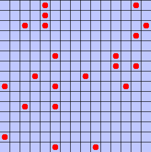
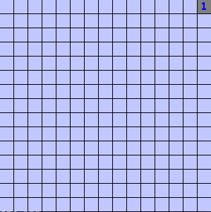
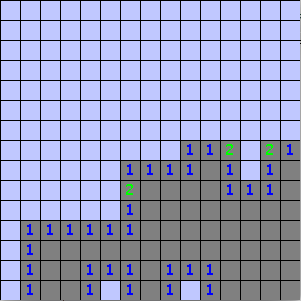
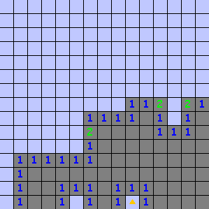

Goals: Design a game with mutable world state, ArrayLists, mutable linked data structures, and loops.
Minesweeper
For this project, you will be implementing the famous time-wasting game known since the 1960s, and popularized by Microsoft Windows 3.1, Minesweeper. The game consists of a two-dimensional grid of cells, with each cell possibly containing a hidden mine. The player can reveal what’s in a cell by clicking on it; there are three possibilities. First and most importantly, if it contains a mine, the player loses. Second, if the cell is empty but adjacent to some mines, the revealed cell shows a number indicating how many of its neighboring cells contain a mine.
Finally, if the revealed cell is both empty and has no neighbors with a mine, then instead of showing a zero, all of its neighbors are revealed, as well. This should cause a cascading “flood-fill” effect where an entire region of connected cells without mines is uncovered (play the game at the above link to see this in action). The flood-fill should stop when it reaches a cell with a non-zero neighboring mine count.
Obviously in the real game, you wouldn’t draw mines on tiles that haven’t been revealed, since that would defeat the whole game! This image is just for demonstration purposes only. In these images, “hidden” cells are drawn light-blue, and “revealed” cells are drawn in gray.

If the player clicks the cell in the top-right corner, the cell shows the number of adjacent mines (in this case, 1):

On the other hand, the cell in the lower-right corner has no adjacent mines. If the player clicked that cell instead, this would trigger the flood-fill behaivor, instantly spreading out and revealing all neighboring cels, stopping at cells that have adjacent mines:

(Animating the flood-fill effect is an extra credit option and not required.)
In that screenshot, it’s obvious that there must be two mines in the middle of the bottom row. A player can indicate the location of a suspected mine by right-clicking a cell to place a flag on it (here shown as an orange triangle on the right-most cell):

The player’s goal is to identify where all of the mines are by uncovering all of the cells except the ones that contain mines. (The mines do not need to be flagged; they’re only for the player’s convenience.)
Prerequisites
import java.util.ArrayList; import tester.*; import javalib.impworld.*; import java.awt.Color; import javalib.worldimages.*;
19.1 Part 1
For the first part of the assignment, design the representation of the game.
Design classes for the game, cells, and any other parts of the game you might need to represent. The game linked above uses a 30x16 grid with 99 mines, but both the grid size and number of mines should be easy to change in your solution. You might want to start with a smaller grid and/or a lower density of mines to make the game easier to win.
Core to the game’s functionality is a cell knowing where its neighbors are and and identifying how many of them have a mine. You can either link cells to each other in your data representation directly or write helper methods that given a cell will produce a list of its neighbors.
Generate the random placement of mines using a Random object. You can supply a specific, seeded Random object in your game’s constructor for use in testing, or you can leave it unspecified for actual play. Hint: Using a counted-for loop to loop exactly \(N\) times generate \(N\) random coordinates is not sufficient, because you might end up generating the same coordinate twice: you need to produce \(N\) distinct mines. There are at least two acceptable solutions to this problem. One simple solution is to use a while loop and keep looping until you have \(N\) distinct mines. This works, but it tends to slow down enormously as the board fills up (imagine using this approach to find a location for the 99th mine on a board with only 100 cells). There is a cleverer second solution that has guaranteed good performance: keep track of which cells are currently unmined, and always randomly pick from them.
Implement a method to count the number of mines neighboring a particular cell. This will likely be simplified by having some simple way to iterate over all the neighbors of a cell.
Implement the methods to draw the game board.
19.2 Part 2
Implement the methods to draw the game board.
19.3 Part 3
For this part of the assignment, finish implementing the game. That means:
Implement left-mouse-click handling to reveal cells, including the flood-fill effect for cells with no adjacent mines.
Implement right-mouse-click handling to flag/unflag cells.
Check for win/loss conditions and end the game with an appropriate win or lose message. For this assignment, you don’t have to start a new game once a previous game ends (although you are welcome to do that if you like).
Note: To have enough information to handle left and right clicks, you will need to override the two-argument form of onMouseClicked, that takes a Posn for the mouse position, and a String describing which button ("LeftButton", "MiddleButton", "RightButton" or "UnknownButton") was clicked.
Extra credit
If you would like to elaborate on this game for extra credit (only after having already finished all of the specifications above) there are several possibilities, in roughly increasing degrees of difficulty:
Enhance the graphics to display how many mines remain to be uncovered, or how many cells, or how many clicks, or “keep score” in some fashion.
Restart the game with a new layout of mines after the game is over.
Don’t generate the mines until a player clicks, so it is guaranteed the first click won’t result in a game over.
Allow the player to select the game difficulty (board size or number of mines) before playing.
Animate the flood fill effect so it happens over time instead of instantly.
Generalize the connectivity of the game, and play minesweeper on a hexagonal grid rather than a square grid.
Generalize the game to allow more than one mine per cell. Generalize the graphics to display more than one mine, and allow the user to right-click and guess how many mines are in a given cell.
If you have other ideas for extra credit, please discuss them with me firs, so we can agree on how feasible it is.